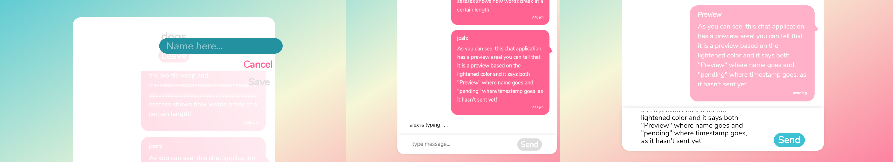

chatr

Chatr
Chatr is a web-based chat client that allows users to create and join chat rooms using React and Socket.io. It was created as a personal project to learn how to use these technologies and to practice web development skills.
Features
- Users can create an account and log in with their username and password.
- Users can create and join chat rooms with custom names and descriptions.
- Users can send and receive messages in real time with other users in the same chat room.
- Users can see who is online in each chat room and how many messages have been sent.
- Users can edit their profile settings, such as changing their password or deleting their account.
Technologies
- React: A JavaScript library for building user interfaces.
- Socket.io: A library that enables real-time communication between web clients and servers.
- Node.js: A JavaScript runtime environment that powers the backend of the chat client.
- Express: A web framework for Node.js that handles routing, middleware, and API endpoints.
- MongoDB: A document-oriented database that stores user and chat room data.
- Bootstrap: A CSS framework that provides responsive design and styling components.
Challenges
Some of the challenges I faced while developing this project were:
- Learning how to use Socket.io to handle real-time communication between clients and servers. I had to understand how sockets work, how to emit and listen for events, how to handle authentication, and how to manage rooms and namespaces.
- Implementing user authentication and authorization using JSON Web Tokens (JWT). I had to learn how to generate, store, verify, and refresh tokens on both the client and server sides. I also had to handle errors such as expired or invalid tokens.
- Designing a user-friendly interface that adapts to different screen sizes. I used Bootstrap components such as navbars, cards, modals, forms, buttons, etc. I also used custom CSS stylesheets for some elements.
Future Improvements
Some of the possible future improvements for this project are:
- Adding more features such as private messaging, file sharing, emoji support, etc.
- Improving the security of the application by encrypting passwords, messages, etc.
- Deploying the application on a cloud platform such as Heroku or AWS.
Demo
You can view a live demo of the chat client here: https://chatr-client.herokuapp.com/
You can also view the source code on GitHub here: https://github.com/Joshrlear/chatr-client